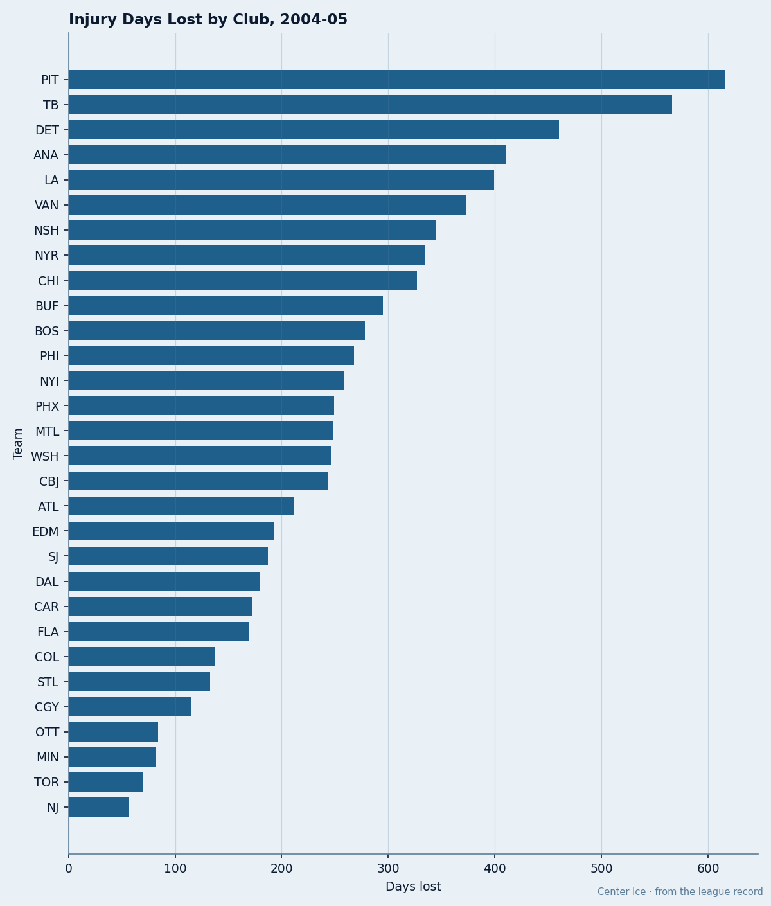
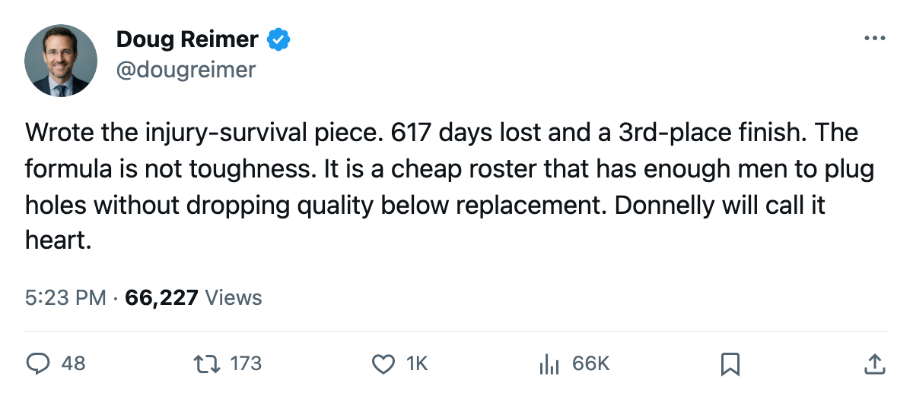
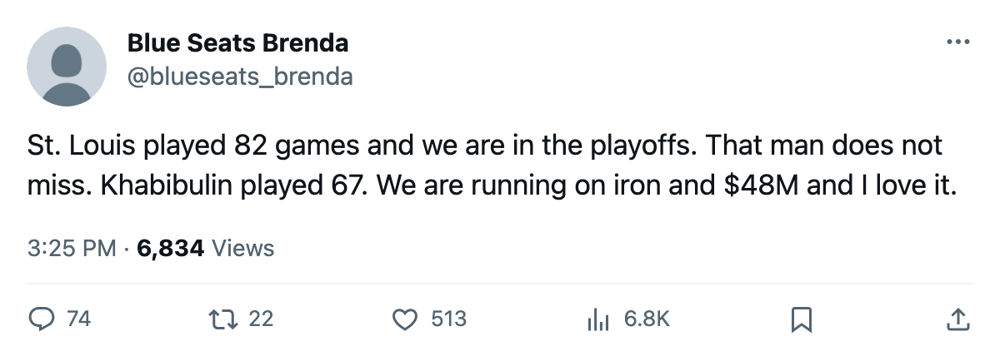

55 Spells, 617 Days, 107 Points: Tampa Bay Finished 3rd in the East on a Broken Roster
The league's 2nd most-depleted club made the playoffs, turned a $34.47M profit, and did it for $0.45M a point
 Doug ReimerAnalytics editor, ex-video coach · The Slot Report
Doug ReimerAnalytics editor, ex-video coach · The Slot Report
 Tampa Bay Lightning lost 617 days to injury across 55 designated spells. It finished 3rd in the East with 107 points and recorded $34.47M in profit, 4th in the league. The method: rank every club by the league's injury ledger (spells, days lost by club), then check who qualified.
Tampa Bay Lightning lost 617 days to injury across 55 designated spells. It finished 3rd in the East with 107 points and recorded $34.47M in profit, 4th in the league. The method: rank every club by the league's injury ledger (spells, days lost by club), then check who qualified.
The 3 most-depleted clubs in the league all made the playoffs.  Pittsburgh Penguins lost 663 days across 59 spells and got the 7th East seed. Tampa Bay lost 617 across 55 and got the 3rd.
Pittsburgh Penguins lost 663 days across 59 spells and got the 7th East seed. Tampa Bay lost 617 across 55 and got the 3rd.  Detroit Red Wings lost 523 across 53 and got the 7th West seed. The 4th (ANA, 468 days) and 6th (VAN, 422 days) also qualified.
Detroit Red Wings lost 523 across 53 and got the 7th West seed. The 4th (ANA, 468 days) and 6th (VAN, 422 days) also qualified.  Los Angeles Kings, 5th in days lost at 443, missed.
Los Angeles Kings, 5th in days lost at 443, missed.

| Club | Spells | Days Lost | Points | Seed | Payroll | $/Point |
|---|---|---|---|---|---|---|
| Pittsburgh Penguins | 59 | 663 | 85 | 7th E | $44.95M | $0.53M |
| Tampa Bay Lightning | 55 | 617 | 107 | 3rd E | $48.50M | $0.45M |
| Detroit Red Wings | 53 | 523 | 96 | 7th W | $80.89M | $0.84M |
 Mighty Ducks of Anaheim Mighty Ducks of Anaheim | 57 | 468 | 97 | 6th W | $41.01M | $0.42M |
| Los Angeles Kings | 53 | 443 | 79 | 11th W | $52.43M | $0.66M |
 Vancouver Canucks Vancouver Canucks | 57 | 422 | 99 | 4th W | $35.16M | $0.36M |
 Nashville Predators Nashville Predators | 61 | 402 | 101 | 3rd W | $46.77M | $0.46M |
Tampa Bay survived on structure.  Nikolai Khabibulin92 played 67 of 82 games (82% share).
Nikolai Khabibulin92 played 67 of 82 games (82% share).  Martin St. Louis87 carried 114 points in all 82 games.
Martin St. Louis87 carried 114 points in all 82 games.  Vincent Lecavalier90 missed 23 games (59 GP, 3 spells, 42 days lost) and still finished with 105 points. The club's morale sits at 96.3, 2nd highest in the league, and its payroll is $48.50M.
Vincent Lecavalier90 missed 23 games (59 GP, 3 spells, 42 days lost) and still finished with 105 points. The club's morale sits at 96.3, 2nd highest in the league, and its payroll is $48.50M.
The depth that stayed available
617 days is a lot. The question is where those days landed. Tampa Bay's top scorer, St. Louis, played every game despite appearing on the club's injury list twice. Lecavalier, the club's second scorer, missed 23. Between them the club lost roughly 23 games of top-two-centre production.
Khabibulin carried the net 67 nights at 91 overall. The club's third and fourth lines absorbed the minutes that Lecavalier vacated, and those men were not graded 70. Tampa Bay's payroll carries depth that is under-allocated by grade because the club's money was not concentrated in one line.
Martin St. Louis told The Tunnel's Marcus Bell after the Tampa Bay season: "You play because the guys beside you are hurt. That is the whole thing."
What money buys when your best man is out
Detroit's payroll is $80.89M, the highest in the league. It lost 523 days and finished with 96 points, 7th in the West. Tampa Bay's payroll is $48.50M. It lost 617 days, more than Detroit, and finished 11 points higher.
Detroit pays $0.84M per point. Tampa Bay pays $0.45M. Detroit was less hurt and earned fewer points per dollar spent.
A $48.50M payroll built for volume (a workhorse goalie, an iron-man scorer, cheap complementary pieces) outlasts an $80.89M payroll built for quality at the top when both lose 500-plus days.
Pittsburgh Penguins is the same lesson at a different scale. 663 days lost, 59 spells, 21 distinct players on the list. 85 points, 7th seed, one point ahead of 8th. The Penguins' payroll is $44.95M. Their morale is 95.2, 4th highest. They survived the same way Tampa Bay did: cheap enough to absorb a missing piece, deep enough to replace him.
The clubs that lost the fewest days were not the best teams.  New Jersey Devils lost 121 days and finished 2nd in the East at 114 points.
New Jersey Devils lost 121 days and finished 2nd in the East at 114 points.  Toronto Maple Leafs lost 93 days and won the Presidents' Trophy at 133. Those two are simply better. But the clubs that lost the most days and still made the field share one thing: a top scorer who stayed on the ice.
Toronto Maple Leafs lost 93 days and won the Presidents' Trophy at 133. Those two are simply better. But the clubs that lost the most days and still made the field share one thing: a top scorer who stayed on the ice.
St. Louis played 82.  Mario Lemieux88 played 73 for Pittsburgh.
Mario Lemieux88 played 73 for Pittsburgh.  Brett Hull77 played 82 for Detroit. The three most-injured clubs in the league each got 73 or more games from their leading scorer. That is the variable that separated them from Los Angeles Kings, which lost 443 days, had
Brett Hull77 played 82 for Detroit. The three most-injured clubs in the league each got 73 or more games from their leading scorer. That is the variable that separated them from Los Angeles Kings, which lost 443 days, had  Adam Deadmarsh87 play 31 games, and finished 11th at 79 points.
Adam Deadmarsh87 play 31 games, and finished 11th at 79 points.

